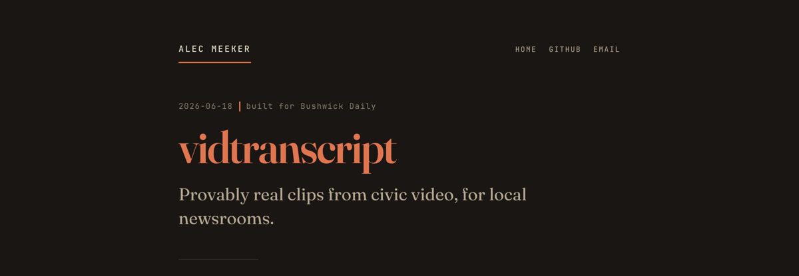
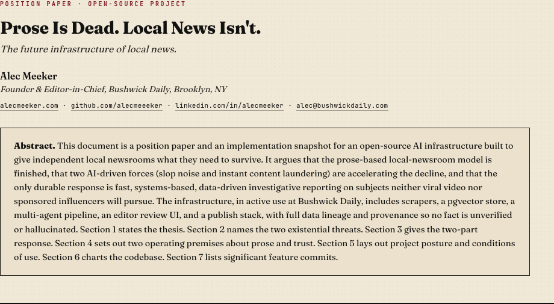
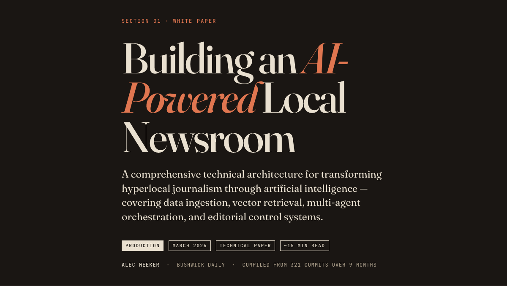
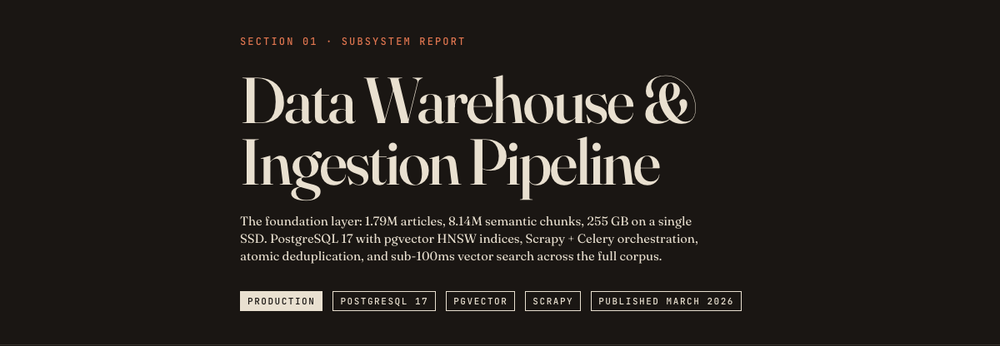
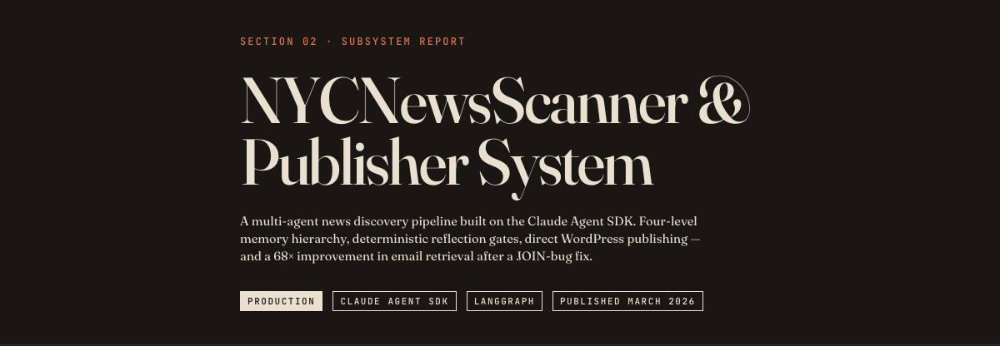
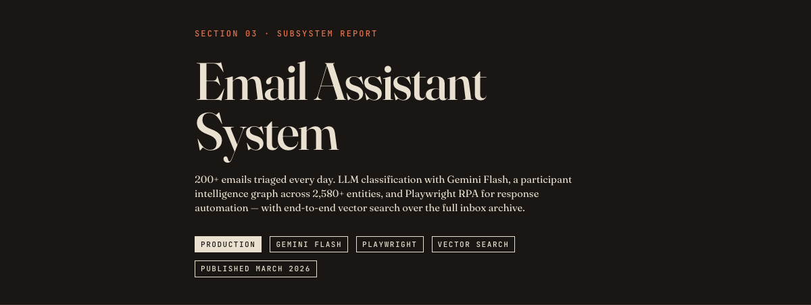
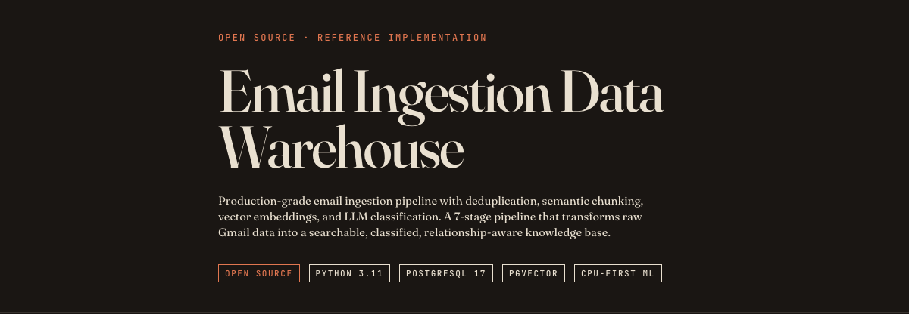
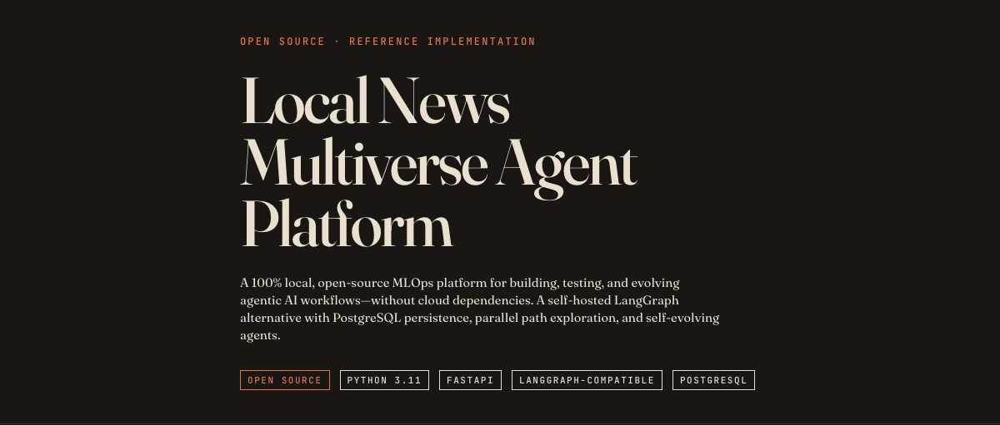

2026-06-18
vidtranscript
Provably real clips from civic video, for local newsrooms. An overview of the tool I built for Bushwick Daily, with links to the product walkthrough and the investor pitch.

NYC-based applied-AI builder, finance professional, and media operator.
I build production AI systems for local news, in daily use at Bushwick Daily. Eight years running that newsroom; before it, institutional finance and a CFA. Code on GitHub, and you can email me.
Current platform: 1.79M articles from 75+ NYC outlets in a 255 GB PostgreSQL + pgvector warehouse, 8.1M embedded chunks, sub-100 ms retrieval.
Provably real clips from civic video, for local newsrooms. An overview of the tool I built for Bushwick Daily, with links to the product walkthrough and the investor pitch.

A position paper on the future infrastructure of local news, with the open-source platform behind it.

White paper: how a hyperlocal newsroom runs on a multi-agent retrieval platform, with three subsystem deep-dives.

1.79M articles in a 255 GB PostgreSQL + pgvector warehouse, with HNSW indexing and sub-100 ms semantic search.

Multi-agent news discovery with human-in-the-loop review and WordPress publishing.

LLM triage and Playwright automation over 200+ inbound emails a day.

Open-source seven-stage email pipeline: PostgreSQL, pgvector, multi-hash dedup, CPU-first classification.

Open-source multi-agent platform: 30+ tables, five parallel research paths, fully local.
